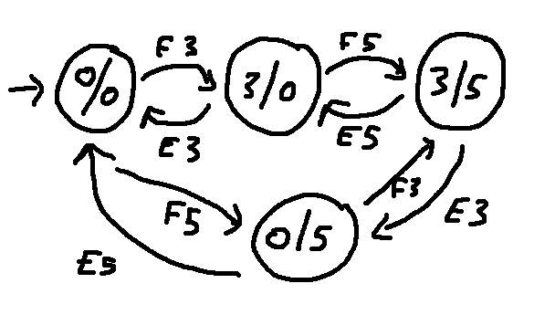
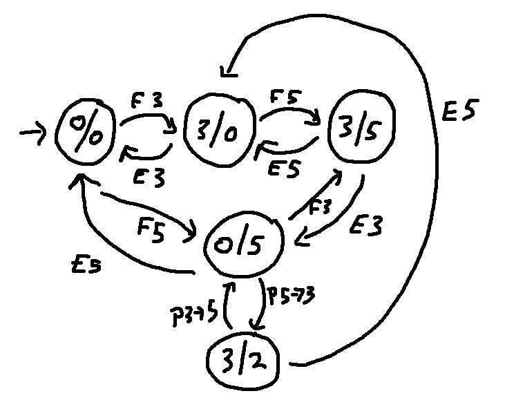
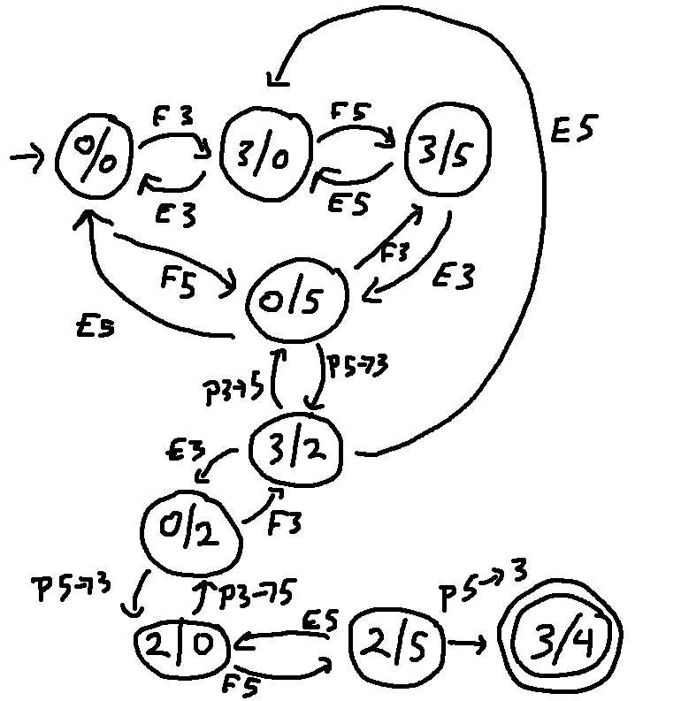
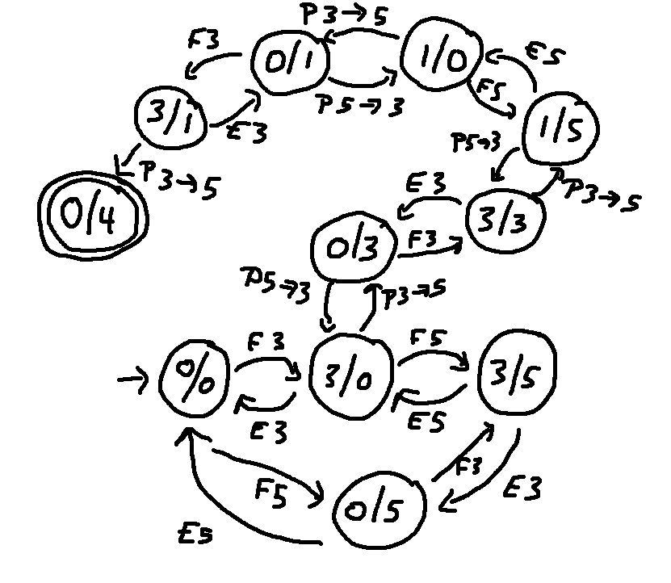

In the movie "Die Hard 3," the bad guy forces our heroes to solve this puzzle:
There are two jugs: 5 gallon and 3 gallon.
You must measure out exactly 4 gallons.
The jugs are unmarked. So your solution needs to use three types of actions:
Naturally, the heroes of Die Hard have to produce a solution way too little time, with the threat of something bad happening if they fail. So the dramatic tension builds and builds and ... We can figure it out in a more peaceful setting.
This is actually one of a family of similar puzzles that have floated around mathematical circles for a long time. You can change the jug sizes and/or the number of jugs, and see how that affects what quantities you can measure out.
Let's model this problem as a state diagram.
First we need to decide how to represent the state of the world. It's enough to know how much water is in each of the jugs. So each state can be x/y, where x is the amount of water in the small jug and y is the amount in the big jug. The process of moving water will produce only integer quantities, so x and y are integers.
How many different states? x can be 0, 1, 2, or 3. y can be 0, 1, 2, 3, 4, or 5. So there are \(4 \times 6 = 24\) different states.
What specific actions will get us from one state to another?
Our start state is 0/0.
Our end states are states where one jug contains exactly 4 gallons. Obviously this must be the big jug. So the end states are 0/4, 1/4, 2/4, and 3/4. State diagrams can only have one start state but they can have multiple end states.
Here's part of the state diagram.

Notice that the start state is marked with an arrow. Also notice that there's a lot of edges even among these four states and there's a lot of ways to go around in circles. So I'm not going to draw all 24 states and all the possible connections. This would be an excellent places to use a short python script.
Here's a bit more of the state diagram, showing a pour action. The pour action is reversible. However, suppose you're in state 3/2 and empty the 5-gallon jug. There's no action that will directly put 2 gallons back into the big jug. So some pairs of states have only a one-way connection.

Here's the rest of the states and actions involved in one solution to the problem. Notice that the final state 3/4 is shown with a double circle.

Here's a different section of the diagram, showing a second solution to the puzzle:

However, there doesn't seem to be any way to get from the start state to either of the other two end states (1/4 and 2/4). Our python script might be designed to map out the entire diagram. Or we might design it to trace outwards from the start state and show only states that can be reached from the start state.